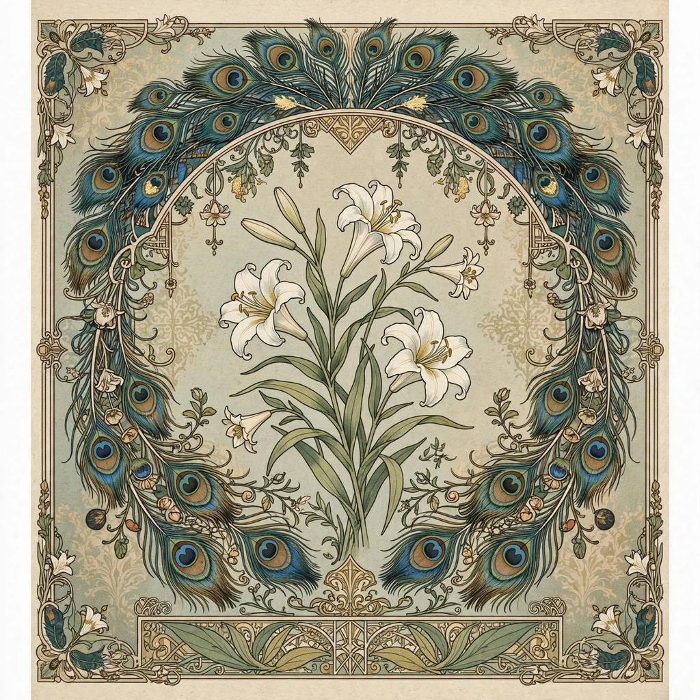

Art for art's sake

"Art for art's sake" (French: l'art pour l'art) is a slogan expressing the philosophy that art should be created for its own inherent value, free from didactic, moral, political or utilitarian functions. It was the rallying cry of the 19th-century aesthetic movement and remains a central doctrine in debates about artistic autonomy.
Origins
The phrase appeared in French criticism in the early 1800s (used by Benjamin Constant and Victor Cousin among others) and was popularised by Théophile Gautier, notably in the preface to his novel Mademoiselle de Maupin (1835), which attacked the idea that art must be useful or morally improving. Gautier argued that "nothing is really beautiful unless it is useless; everything useful is ugly."
Development
In England the doctrine was championed by Walter Pater, whose Studies in the History of the Renaissance (1873) urged readers to burn "with this hard, gem-like flame", and by Oscar Wilde, who wrote in the preface to The Picture of Dorian Gray that "all art is quite useless" and "there is no such thing as a moral or an immoral book". James McNeill Whistler promoted the same ideas in painting. Through the Decadent and Symbolist movements, the doctrine influenced modernism across Europe and America; Edgar Allan Poe's idea that a poem should be written "for the poem's sake" was a parallel influence.
Criticism and legacy
The slogan was attacked by moralists, socialists and later by advocates of socially engaged art, who saw it as an evasion of art's responsibilities; George Sand and later Jean-Paul Sartre argued for committed literature. The slogan survives famously in the Latin form ars gratia artis in the trademark of Metro-Goldwyn-Mayer, around the head of Leo the Lion.